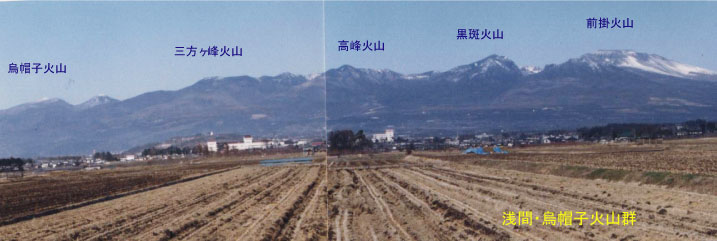
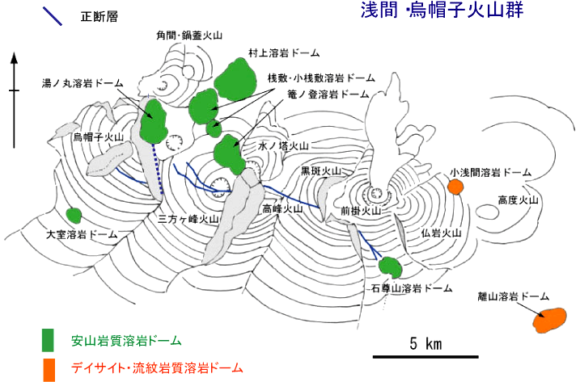
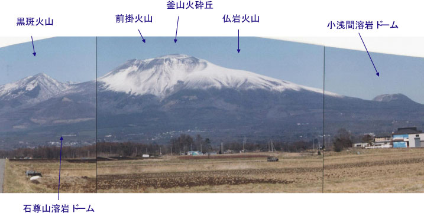
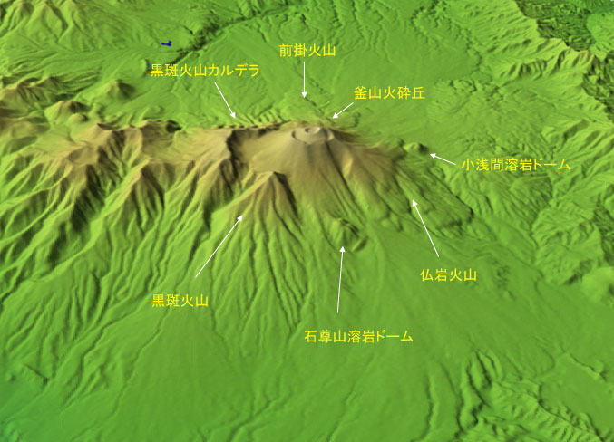
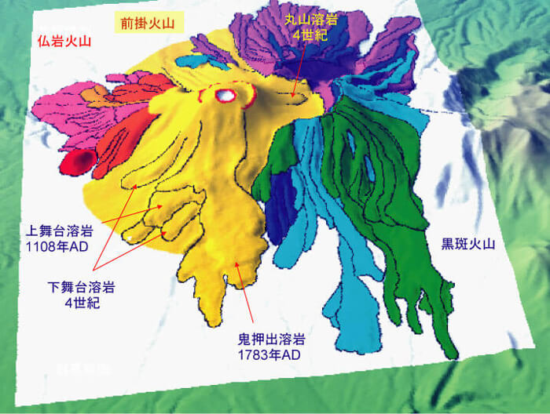
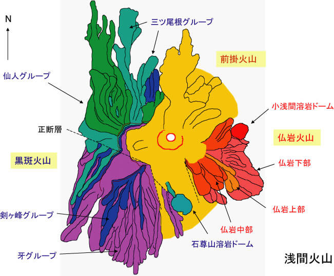
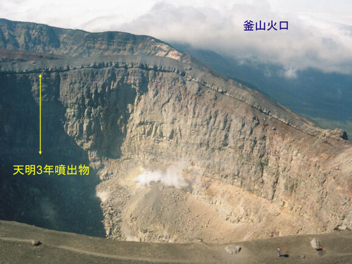

「浅間火山」の名称について
浅間火山は一般には黒斑火山と仏岩火山および前掛火山からなるとされている．しかし，この3火山は浅間・烏帽子火山群の1メンバーにすぎず，これらの火山だけを浅間火山としてひとくくりにしなければならない積極的理由はない．このことは荒牧(1968)においても指摘されている．しかし，現在では便宜上これらの3火山は一括して「浅間火山」とよばれている．本来は浅間火山の名称は現在活動中の前掛火山に限定すべきであると私たちは考える．


What is the Asama-Maekake Volcano?
高橋正樹・安井真也・竹本弘幸（日本大学文理学部地球システム科学教室）
はじめに
群馬・長野両県の境に位置する浅間火山は，わが国を代表する活動的な安山岩質の活火山である．浅間火山は関東平野にも近く，噴火時には風向きによっては東京にまで降灰がおよぶこともある．私たちのグループはここ15年間余りにわたってこうした浅間火山の地質学的・岩石学的研究を進めてきた．そのデータの多くは未公表であるが，今回の21年ぶりの浅間前掛火山の噴火を機会にその一端を公開することにした（論文による公表も準備中）．噴火に対処するための第一歩は，まずその火山の成り立ちや噴火のくせをよく知ることである．このホームページがそのための一助となれば幸いである．
Geology and Eruptive History of Asama-Maekake Volcano
現在も活発に活動を続ける浅間前掛火山（狭義の浅間火山）は，1万年前以降に活動を開始した若い安山岩質の複成火山である．浅間前掛火山は，10万年前から2万年前の間に形成された黒斑火山と2万年前から1万年前に形成された仏岩火山の中間地点に噴出している．浅間前掛火山は40万年間以上にわたって活動を続けてきた東西20km以上に延びる浅間・烏帽子火山群の構成メンバーであるが，その中では形成年代が最も新しい．

図1-1 南側の長野県佐久平からみた浅間・烏帽子火山群

図1-2 浅間・烏帽子火山群の概略図．複数の大型～中型の複成火山および溶岩ドーム群からなる．全体として西から東に向かって年代が若くなる傾向がみられる．浅間前掛火山は、その中でも最も新しい火山であり1万年前以降に活動を開始した．
図1-3は浅間前掛火山を南方の長野県側から眺めたものである．西側のやや侵食の進んだ山体が黒斑火山，東側の緩傾斜の斜面をもった山体が仏岩火山であり，その中間に聳えるお椀を伏せたような形態の山体が前掛火山である．写真Aの向かって左手手前の小丘は石尊山溶岩ドーム，右手の小丘が小浅間溶岩ドームであるが，それぞれ黒斑火山と仏岩火山の側火山であって，前掛火山との直接的関係はない．前掛火山の山頂部にみえる小丘は18世紀の大規模噴火時に形成された釜山火砕丘である．黒斑火山は活動末期の約2万3000年前に大崩壊し本来の山頂部が失われた．現在では，山頂部には馬蹄形のカルデラが発達している．
A

B

図1-3 南方の長野県側からみた浅間前掛火山の地形．
Aは御代田方面からの写真．Bは南方からみた鳥瞰図地形（カシミール3Dを使用）．
石尊山溶岩ドームと小浅間溶岩ドームは，それぞれ黒斑火山と仏岩火山の側火山．黒斑火山山頂には、東に向かって開いた馬蹄型カルデラが発達している。
北方の群馬県側から眺めると，南斜面とは異なり規模の大きな溶岩流の発達がみられる（図1-4）．それらは，4世紀の下舞台溶岩，12世紀の上舞台溶岩，そして18世紀の鬼押出溶岩である．黒斑火山と前掛火山の中間の湯の平に流下した丸山溶岩は4世紀の下舞台溶岩と同時期のものらしい．浅間前掛火山で火口から2km以遠にまで到達した規模の大きい溶岩はこれら以外にはみられない．
A

B

図1-4 北方の群馬県側からみた浅間前掛火山の地形．
Aは鳥瞰図上にBの浅間火山地質分布図を配置したもの．Bは浅間火山地質分布図．
図1-5は前掛火山および釜山火砕丘の内部構造を示したものである．一見溶岩のようにみえるが，何れも強く溶結した火砕岩からなる．Bは釜山火砕丘の内部を眺めたもので，矢印で示した部分が天明3年（西暦1783年）8月の大規模噴火時に形成された火砕堆積物の強溶結部である．このように，前掛火山の山体は主として強く溶結した火砕岩からなり，大規模噴火のたびに成長してきたことがわかる．火口から北側2km以遠にまで到達した溶岩流のうち，少なくとも天明大噴火時に流下した鬼押出溶岩と天仁大噴火（西暦1108年）時に流下した上舞台溶岩は溶結した火砕岩が再流動して2次的に流下したいわゆる「火砕成溶岩」である．前掛火山は2次流動火砕岩をともなう基本的に溶結した大型の複合火砕丘であると考えられる．
A

B

図1-5 前掛および釜山火砕丘の内部構造．何れも強く溶結した火砕堆積物からなる．
A: 前掛火口と釜山火口（撮影：千葉達朗）B: 釜山火口
浅間火山は一般には黒斑火山と仏岩火山および前掛火山からなるとされている．しかし，この3火山は浅間・烏帽子火山群の1メンバーにすぎず，これらの火山だけを浅間火山としてひとくくりにしなければならない積極的理由はない．このことは荒牧(1968)においても指摘されている．しかし，現在では便宜上これらの3火山は一括して「浅間火山」とよばれている．本来は浅間火山の名称は現在活動中の前掛火山に限定すべきであると私たちは考える．